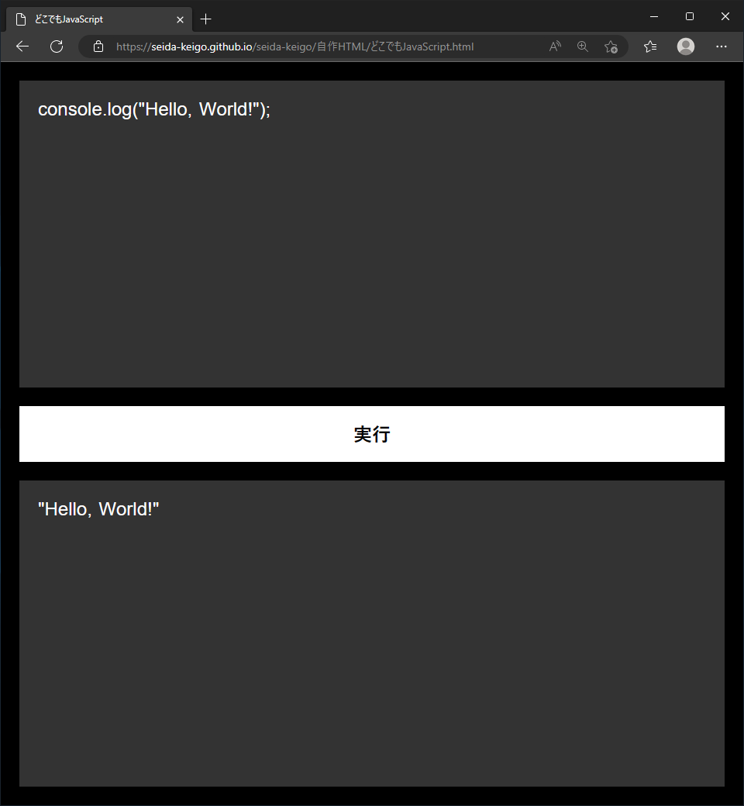
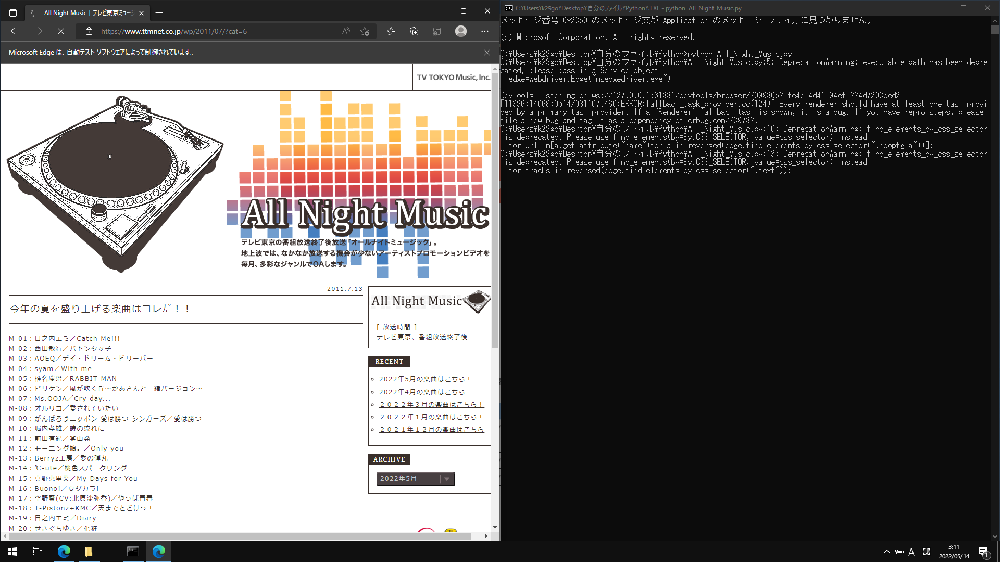

どこでもJavaScript.html
スマートフォンでもPCでも、JavaScriptを自学習できます。consoleオブジェクトについては、一部のメソッドが対応しております。（ソースコードはこちらです。）

All_Night_Music.py（Python）
テレビ東京のAll Night Musicで放送された曲の一覧のHTMLファイルを作成します。（Edgeドライバーを使用します。）作成されたHTMLファイルから、YouTubeで検索して視聴できます。
私の名前は清田圭吾です。埼玉県出身で、プログラミングの学習に取り組んでいます。どうぞよろしくお願いいたします。

スマートフォンでもPCでも、JavaScriptを自学習できます。consoleオブジェクトについては、一部のメソッドが対応しております。（ソースコードはこちらです。）
テレビ東京のAll Night Musicで放送された曲の一覧のHTMLファイルを作成します。（Edgeドライバーを使用します。）作成されたHTMLファイルから、YouTubeで検索して視聴できます。